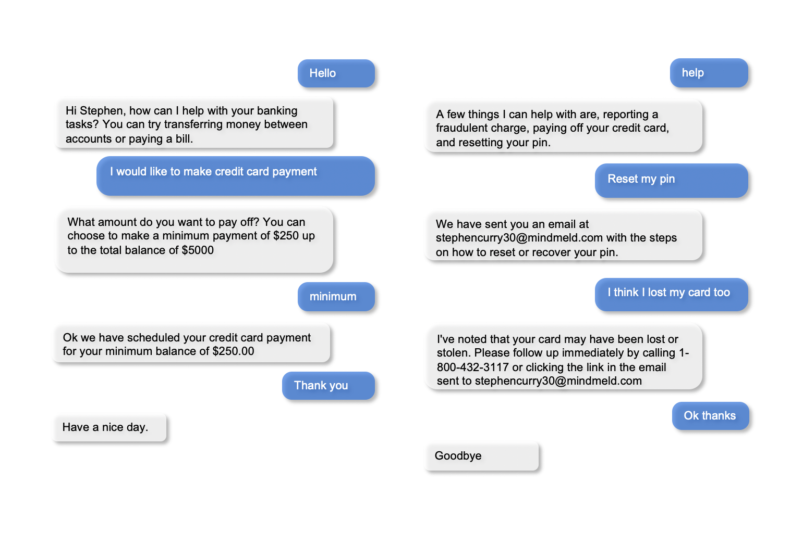

Banking Assistant¶
In this step-by-step walkthrough, you will build a conversational application that allows users to complete common banking tasks that include transferring money and paying bills.
Working through this blueprint will teach you how to
- obtain missing information (entities) using a slot/entity filling form
- query and update external data storage with the dialogue manager
- pass immutable information, like a user token, from a client application to your MindMeld application server
- use roles in entity hierarchy
Note
Please make sure to install and run all of the pre-requisites for MindMeld before continuing on with this blueprint tutorial.
1. The Use Case¶
Users should be able to securely access their banking information and complete tasks as if they are conversing with a teller. They should be able to check balances, pay off credit card debt, transfer money, and carry out various other banking operations they may perform on a day to day basis. In a production application, the frontend would handle user authentication and pass a token to the MindMeld server, which would allow the application to make calls to a bank's REST APIs.
2. Example Dialogue Interactions¶
The conversational flows for a banking assistant can be highly complex, depending on the desired application functionality and the amount of user guidance required at each step. Anticipating all user interactions requires multiple iterations.
While a real production application will securely authenticate users, for this blueprint, we have given the option to choose from three sample users: larry_l24, johndoe123 and splashbro30. You can specify the desired username as a parameter in the request context and if a user is not specified a random user from the sample users will be chosen.
Here are some examples of scripted dialogue interactions for conversational flows.
{kind=link}
Exercise
Pick a convenient textual or graphical representation. Try to design as many flows as you can. Always capture the entire dialogue from start to finish. Think of scenarios that differ from the examples above, such as: trying to transfer the money you do not have, reporting a fraudulent charge on your credit card, asking for your routing number, and so on.
3. Domain-Intent-Entity Hierarchy¶
The banking assistant is organized into four domains: Greeting, Accounts & Credit Cards, FAQ, and Unsupported. The main domain, accounts_creditcards, encompasses all of the functionality required to perform tasks that require personal user banking information. The accounts_creditcards domain supports the following intents:
transfer_balances— User wants to transfer money from one account to anothercheck_balances— User wants the current balance for a particular accountpay_creditcard— User wants to pay off a credit card billcheck_due_date— User wants the date the bill is duesetup_autopay— User wants to activate automatic payments
The full list of intents for all domains is illustrated below.

There are two types of entities in MindMeld: System Entities and Custom Entities. System entities are pre-defined and automatically detected by MindMeld. Examples include sys_amount-of-money, sys_time, and sys_interval. Custom entities are defined by the developers of each application and detected by the models trained on the labeled data and entity gazetteer files.
The banking assistant defines and uses the following custom entities in the accounts_creditcards domain:
account_type: detects which account you are referring to, for example:what is my {savings|account_type} balance?credit_amount: detects the amount you would like to pay off your credit bill, for example:can you make a {minimum|credit_amount} payment for my card?
The banking assistant uses one system entity sys_amount-of-money (money). Some examples for annotation with system entities: "please transfer {20k|sys_amount-of-money}" and "pay {two hundred dollars|sys_amount-of-money} towards my credit bill".
Queries can include more than one entity of the same type. In "transfer money from checking to savings", for example, both "checking" and "savings" are account_type entities. Simply detecting these two entities as account_type doesn't provide us with all the information we need to fully understand the user query and execute the desired action. We therefore use roles to further classify the account_type entities - an "origin" role that represents where the money is coming from, and a "destination" role that indicates where the money needs to be moved to. Accordingly, we annotate the example as "transfer money from {checking|account_type|origin} to {savings|account_type|dest}." This way, we can interpret each entity correctly and better understand the meaning of the full query. See Role Classifier.
Exercise
While the blueprint provides a good starting point, you may need additional intents and entities to support the desired scope of your app. Enumerate some other intents (e.g., check_transfer_status, get_credit_score, and so on) and entities (e.g., transfer_status, account_number, and so on) that make sense for a banking task use case.
To train the different machine learning models in the NLP pipeline for this app, we need labeled training data that covers all our intents and entities. To download the data and code required to run this blueprint, run the command below in a directory of your choice. (If you have already completed the Quick Start for this blueprint, you should skip this step.)
Warning
This application requires Elasticsearch for the QuestionAnswerer. Please make sure that Elasticsearch is running in another shell before proceeding to setup this blueprint.
python -c "import mindmeld as mm; mm.blueprint('banking_assistant');"
This should create a MindMeld project folder called banking_assistant in your current directory with the following structure:

4. Dialogue States¶
Dialogue state logic can be arbitrarily complex. Simple dialogue state handlers just return a canned text response, while sophisticated ones can call third party APIs, calculate state transitions, and return complex responses.
To support the functionality we envision, our app needs one dialogue state for each intent, as shown in the table below.
| Intent | Dialogue State Name | Dialogue State Function |
|---|---|---|
greet |
greet |
Begin an interaction and welcome the user |
transfer_balances |
transfer_balances |
Transfer balances from one account to another |
pay_creditcard |
pay_creditcard |
Make a credit card payment |
check_balances |
check_balances |
Check current balance of an account |
credit_due_date |
credit_due_date |
Check due date of credit card payment |
setup_autopay |
setup_autopay |
Turn on or off automatic payments |
activate_creditcard |
activate_creditcard |
Activate a new credit card |
apply_loan |
apply_loan |
Information for how to apply for a loan |
forgot_pin |
forgot_pin |
Information for how to recover a forgotten pin |
fraud_charge |
fraud_charge |
Information on steps to take for fraudulent charge |
routing_number |
routing_number |
Returns routing number specific to user |
order_checks |
order_checks |
Sends an email confirmation of checkbook order |
new_creditcard |
new_creditcard |
Information on how to open a new card |
lost_creditcard |
lost_creditcard |
Information on how report a stolen credit card |
exit |
exit |
End the current interaction |
help |
help |
Provide banking tasks suggestions |
unsupported |
default |
Prompt a user who has gone off-topic to get back to banking tasks |
All dialogue states and their associated handlers are defined in the __init__.py application container file at the top level of the blueprint folder.
Handler logic can be simple, complex, or in between. At one end of this spectrum, the handler simply returns a canned response, sometimes choosing randomly from a set of responses. A more sophisticated handler could execute knowledge base queries to fill in the slots of a partially-templatized response. And a handler that applies more complex business logic could call an external API, process what the API returns, and incorporate the result into the response template.
The handler logic is fairly straightforward for most of our dialogue states. The main actions are choosing from a set of pre-scripted natural language responses, and replying to the user. These simple states include greet, order_checks, apply_loan, activate_creditcard and default.
For example, here's the order_checks state handler, where we clear the dialogue frame and use the responder object to reply with one of our scripted responses:
@app.handle(intent='order_checks')
def order_checks(request, responder):
"""
When the user requests a checkbook, begin the order process and notify user
"""
# Respond with a detailed response notifying the user what will happen next.
replies = ['We have placed an order for a checkbook. To confirm, change quanity, or any other questions please view confirmation email.']
responder.reply(replies)
By contrast, the handler logic for the pay_creditcard and setup_autopay dialogue states is more substantial, because they contain more complex logic for handling user information in our application. In these dialogue state handlers, we will need to retrieve data and also make updates to the data which will ideally require a call to an external API.
We can illustrate this with an implementation of the setup_autopay handler:
@app.handle(intent='setup_autopay')
def setup_autopay(request, responder):
"""
When the user expresses an intent to activate autopay, check to see if it has
already been enabled and if not proceed to activate it and update the user data.
"""
# Check to see if the user has specified an entity which can only be present if the user wants to turn off autopay
if request.entities:
#prompt user with appropriate message to turn off autopay or to notify them it is already off
if _get('auto_pay') == 0:
replies = ['Autopay is already off. To turn back on just say \'autopay on\'.']
else:
replies = ['Autopay has been turned off. To turn back on just say \'autopay on\'.']
_put('auto_pay', 0)
# If no entity is specified prompt user with appropriate message to turn on autopay or notify them it is already on
else:
if(_get('auto_pay') != 0):
replies = ['AutoPay is already turned on. To turn off just say \'autopay off\'.']
else:
replies = ['AutoPay has been turned on. To turn off just say \'autopay off\'.']
_put('auto_pay', 1)
# respond with the current state of autopay
responder.reply(replies)
This code is a simpler example of how to incorporate a third party API, the _get and _put methods are used here to mimic an API calls to get information and push an update.
Here we will illustrate a simple version of the pay_creditcard handler, which is more complex than the prior handler and uses custom and system entities:
@app.handle(intent='pay_creditcard')
def pay_creditcard(request, responder):
"""
When the user expresses an intent to make a credit card payment, check to see if
they have specified a numerical amount or a generic amount like minimum
"""
#check to see what entity the user has specified
for entity in request.entities:
#if it is a credit amount type entity we can narrow it down to being balance or minimum
if entity['type'] == 'credit_amount':
responder.slots['payment'] = entity['value'][0]['cname'] or entity['text']
#if it is minimum proceed to handle a payment for the minimum amount of the total credit balance
if(responder.slots['payment'] == 'minimum'):
responder.reply(['Ok we have scheduled your credit card payment for your {payment} balance of ${min}'])
#update the user data with the new amount for the credit balance
_put('credit', _get('credit') - responder.slots['min'])
#update the checking account to reflect the payment made
_put('checking', get('checking') - responder.slots['min'])
#if it is balance handle it similar to minimum but with the amount being the total credit debt
else:
responder.reply(['Sure, we have scheduled your credit card payment for your {payment} of ${total_balance}.'])
_put('credit', 0)
_put('checking', get('checking') - responder.slots['total_balance'])
#handle the system entity of the exact dollar amount they want to pay off
else:
responder.slots['amount'] = entity['value'][0]['value']
responder.reply(['Ok we have scheduled your credit card payment for {amount}'])
_put('credit', _get('credit') - entity['value'][0]['value'])
_put('checking', get('checking') - responder.slots['amount'])
responder.listen()
For a more realistic implementation of pay_creditcard that deals with varied user flows and the full code behind all the dialogue state handlers, see the __init__.py file in the blueprint folder.
Slot Filling¶
Slot/entity filling logic allows you to easily request for missing entities. You can set custom responses in the slot filling form to prompt the user with when an entity is missing in the user request. Once the missing entities in the form have been provided you can handle the rest of the logic as you would in the handler function of your intent.
A simple example of slot filling logic is shown below:
#slot filling logic requires a form which has your needed entities for the intent
balance_form = {
'entities':[
FormEntity(
#specify the entity custom or system
entity='account_type',
#the response to prompt the user with if it is missing in the request
responses=['Sure. for which account?'])
],
#keys to specify if you want to break out of the slot filling logic
'exit_keys' : ['cancel', 'restart', 'exit', 'reset', 'no', 'nevermind', 'stop', 'back', 'help', 'stop it', 'go back'
'new task', 'other', 'return'],
#a message to prompt the user after exit
'exit_msg' : 'A few other banking tasks you can try are, ordering checks and paying bills',
#the number of max tries for the user to specify the entity
'max_retries' = 1
}
#the @app.auto_fill decorator indicates it is a dialogue state handler that requires a form and uses the slot filling logic
@app.auto_fill(intent='check_balances', form=balance_form)
#Control is passed on to this dialogue state handler one the slot-filling process is completed and all required entities in this form have been obtained.
def check_balances_handler(request, responder):
if not user_data:
_pull_data(request)
if request.entities:
for entity in request.entities:
if entity['type'] == 'account_type':
responder.slots['account'] = entity['value'][0]['cname'] or entity['text']
responder.slots['amount'] = _get(entity['value'][0]['cname'] or entity['text'])
responder.reply('Your {account} account balance is {amount}')
5. Knowledge Base¶
Since the banking assistant will require personal information we have decided to not include a knowledge base to mimic how this data may be received from an external API. Most likely the frontend would handle the user authentication and pass on a token to the request context, which is immutable once the conversation has started. The MindMeld server can then use this token to retrieve user information from a secure database. In this blueprint, we demonstrate how this can be done by simply passing the user_name in the context and using it to retrieve information from a simple database. For a production application, these can be replaced by a secure token and an API call to a secure database. These databases and APIs likely already exist internally at financial institutions.
6. Training Data¶
The labeled data for training our NLP pipeline was created using both in-house data generation and crowdsourcing techniques. See Step 6 of the Step-By-Step Guide for a full description of this highly important, multi-step process. Be aware that at minimum, the following data generation tasks are required:
Purpose
|
Question (for crowdsourced data generators)
or instruction (for annotators)
|
|---|---|
Exploratory data generation
for guiding the app design
|
"How would you talk to a conversational app
to perform banking tasks?"
|
Targeted query generation
for training the Intent Classifier
|
pay_creditcard: "What would you say to the appto pay off your credit debt?"
|
Targeted query annotation
for training the Entity Recognizer
|
pay_creditcard: "Annotate all occurrences of amount types andnumeric inputs in the given query."
|
Targeted synonym generation
for training the Entity Resolver
|
credit_amount: "What are the different ways in whichyou would refer to the amount you want to pay off?"
account_type: "What names would you use to referto different banking accounts?"
|
Annotate queries for
training the Role Classifier
|
account_type: "Annotate all entities with theircorresponding roles, e.g.
origin and dest." |
The domains directory contains the training data for intent classification and entity recognition. The entities directory contains the data for entity resolution. Both directories are at root level in the blueprint folder.
Exercise 1
- Study the best practices around training data generation and annotation for conversational apps in Step 6 of the Step-By-Step Guide. Following those principles, create additional labeled data for all the intents in this blueprint. Read more about NLP model evaluation and error analysis in the User Guide. Then apply what you have learned in evaluating your app, using your newly-created labeled data as held-out validation data.
- Complete the following exercise if you are extending the blueprint to build your own banking assistant. For common intents like
greet,exit, andhelp, start by simply reusing the blueprint data to train NLP models for your banking assistant. Forpay_creditcardand any other app-specific intents, gather new training data tailored to the relevant entities (credit card, balance, etc.). Apply the approach you learned in Step 6.
7. Training the NLP Classifiers¶
Train a baseline NLP system for the blueprint app. The build() method of the NaturalLanguageProcessor class, used as shown below, applies MindMeld's default machine learning settings.
from mindmeld.components.nlp import NaturalLanguageProcessor
import mindmeld as mm
mm.configure_logs()
nlp = NaturalLanguageProcessor(app_path='banking_assistant')
nlp.build()
Loading queries from file banking_assistant/domains/accounts_creditcards/check_balances/train.txt
Loading queries from file banking_assistant/domains/accounts_creditcards/credit_due_date/train.txt
Loading queries from file banking_assistant/domains/accounts_creditcards/pay_creditcard/train.txt
Loading queries from file banking_assistant/domains/accounts_creditcards/setup_autopay/train.txt
Loading queries from file banking_assistant/domains/accounts_creditcards/transfer_balances/train.txt
Loading queries from file banking_assistant/domains/faq/activate_creditcard/train.txt
Fitting intent classifier: domain='accounts_creditcards'
Selecting hyperparameters using k-fold cross-validation with 5 splits
Best accuracy: 95.92%, params: {'C': 10, 'class_weight': {0: 0.8992592592592593, 1: 1.2360330578512397, 2: 0.8992592592592593, 3: 0.8033777777777779, 4:
1.6324705882352941}, 'fit_intercept': False}
Fitting entity recognizer: domain='accounts_creditcards', intent='transfer_balances'
Selecting hyperparameters using k-fold cross-validation with 5 splits
Best accuracy: 97.70%, params: {'C': 100, 'penalty': 'l2'}
Fitting intent classifier: domain='faq'
Selecting hyperparameters using k-fold cross-validation with 5 splits
Best accuracy: 95.76%, params: {'C': 100, 'class_weight': {0: 1.140406976744186, 1: 0.8602713178294573, 2: 1.0528645833333332, 3: 0.9125, 4: 0.9630733944954128, 5:
1.1307471264367814, 6: 0.9230603448275863, 7: 1.150294117647059}, 'fit_intercept': True}
Fitting entity recognizer: domain='faq', intent='forgot_pin'
Tip
During active development, it is helpful to increase the MindMeld logging level to better understand what is happening behind the scenes. All code snippets here assume that the logging level has been set to verbose.
To see how the trained NLP pipeline performs on a test query, use the process() method.
nlp.process('transfer two hundred dollars from my checking to my savings')
{
"text":"transfer two hundred dollars from my checking to my savings",
"domain":"accounts_creditcards",
"intent":"transfer_balances",
"entities":[ {
"text":"two hundred dollars",
"type":"sys_amount-of-money",
"role":"None",
"value":[ { "value":200,
"unit":"$" }],
"span": { "start":9,
"end":27 }
},
{
"text":"checking",
"type":"account_type",
"role":"origin",
"value":[ { "cname":"checking",
"score":19.269196,
"top_synonym":"checking" },
{
"cname":"savings",
"score":0.8455887,
"top_synonym":"savings" }],
"span": { "start":37,
"end":44 }
},
{
"text":"savings",
"type":"account_type",
"role":"dest",
"value":[ { "cname":"savings",
"score":22.154217,
"top_synonym":"savings" },
{
"cname":"checking",
"score":0.5525543,
"top_synonym":"chkings" } ],
"span": { "start":52,
"end":58 } } ]
}
For the data distributed with this blueprint, the baseline performance is already high. However, when extending the blueprint with your own custom banking assistant data, you may find that the default settings may not be optimal and you could get better accuracy by individually optimizing each of the NLP components.
Start by inspecting the baseline configurations that the different classifiers use. The User Guide lists and describes the available configuration options. As an example, the code below shows how to access the model and feature extraction settings for the Intent Classifier.
ic = nlp.domains['accounts_creditcards'].intent_classifier
ic.config.model_settings['classifier_type']
'logreg'
ic.config.features
{'bag-of-words': {'lengths': [1, 2]},
'edge-ngrams': {'lengths': [1, 2]},
'in-gaz': {}, 'exact': {'scaling': 10},
'gaz-freq': {},
'freq': {'bins': 5}
}
You can experiment with different learning algorithms (model types), features, hyperparameters, and cross-validation settings by passing the appropriate parameters to the classifier's fit() method. Here are a few examples.
Change the feature extraction settings to use bag of bigrams in addition to the default bag of words:
features = {
'bag-of-words': {'lengths': [1, 2]},
'freq': {'bins': 5},
'in-gaz': {},
'length': {}
}
ic.fit(features=features)
Fitting intent classifier: domain='accounts_creditcards'
Selecting hyperparameters using k-fold cross-validation with 5 splits
Best accuracy: 95.92%, params: {'C': 10, 'class_weight': {0: 0.8992592592592593, 1: 1.2360330578512397, 2: 0.8992592592592593, 3: 0.8033777777777779, 4: 1.6324705882352941}, 'fit_intercept': False}
Change the classification model to random forest instead of the default logistic regression:
ic.fit(model_settings={'classifier_type': 'rforest'}, param_selection={'type': 'k-fold', 'k': 10, 'grid': {'class_bias': [0.7, 0.3, 0]}})
Fitting intent classifier: domain='accounts_creditcards'
Selecting hyperparameters using k-fold cross-validation with 10 splits
Best accuracy: 92.46%, params: {'class_weight': {0: 1.0, 1: 1.0, 2: 1.0, 3: 1.0, 4: 1.0}}
You can use similar options to inspect and experiment with the Entity Recognizer and the other NLP classifiers. Finding the optimal machine learning settings is a highly iterative process involving several rounds of model training (with varying configurations), testing, and error analysis. See the User Guide for more about training, tuning, and evaluating the various MindMeld classifiers.
Exercise
Experiment with different models, features, and hyperparameter selection settings to see how they affect classifier performance. Maintain a held-out validation set to evaluate your trained NLP models and analyze misclassified test instances. Then, use observations from the error analysis to inform your machine learning experimentation. See the User Guide for examples and discussion.
8. Parser Configuration¶
The relationships between entities in the banking assistant queries are simple ones. For example, in the annotated query can you pay my {minimum|credit_amount} bill, the credit amount entity is self-sufficient, in that it is not described by any other entity.
If you extended the app to support queries with more complex entity relationships, it would be necessary to specify entity groups and configure the parser accordingly. For example, in the query can you pay my {minimum|credit_amount} bill for my {amex|credit_card}, we would need to relate the credit_amount entity to the credit_card entity, because one entity describes the other. The related entities would form an entity group. For more about entity groups and parser configurations, see the Language Parser chapter of the User Guide.
Since we do not have entity groups in the banking assistant, we do not need a parser configuration.
9. Using the Question Answerer¶
The Question Answerer component in MindMeld is mainly used within dialogue state handlers for retrieving information from the knowledge base. Since the banking assistant has no knowledge base, question answerer is not needed.
10. Testing and Deployment¶
Once all the individual pieces (NLP, Question Answererer, Dialogue State Handlers) have been trained, configured, or implemented, use the Conversation class in MindMeld to perform an end-to-end test of your conversational app.
For instance:
from mindmeld.components.dialogue import Conversation
conv = Conversation(nlp=nlp, app_path='banking_assistant')
conv.say("pay off my credit card bill for my remaining balance please")
['Ok we have scheduled your credit card payment for your balance of $5000']
The say() method packages the input text in a user request object and passes it to the MindMeld Application Manager to simulate a user interacting with the application. The method then outputs the textual part of the response sent by the application's Dialogue Manager. In the above example, we requested to pay off our credit debt, in a single query. The app responded, as expected, with the amount that will be paid off.
You can also try out multi-turn dialogues (transfer balances):
>>> conv = Conversation(nlp=nlp, app_path='banking_assistant', context={'user_name' : 'splashbro30'})
>>> conv.say('Hi there!')
['Thanks for using MindMeld Bank Stephen! What would you like to do today? A few things I can help with are, checking balances, paying off your credit card, and setting up a new card.']
>>> conv.say("I'd like to transfer some money")
['Sure. Transfer from which account - checking or savings?']
>>> conv.say("savings")
['To which account - checking or savings?']
>>> conv.say("my checking account")
['And, how much do you want to transfer?'
>>> conv.say("20 dollars")
['All right. A transfer of $20.00 dollars from your savings to your checking has been intiated.']
>>> conv.say("Thanks, bye!")
['Have a nice day.']
Exercise
Test the app multiple times with different conversational flows. Keep track of all cases where the response does not make good sense. Then, analyze those cases in detail. You should be able to attribute each error to a specific step in our end-to-end processing (e.g., incorrect intent classification, missed entity recognition, unideal natural language response, and so on). Categorizing your errors in this manner helps you understand the strength of each component in your conversational AI pipeline and informs you about the possible next steps for improving the performance of each individual module.
Refer to the User Guide for tips and best practices on testing your app before launch.